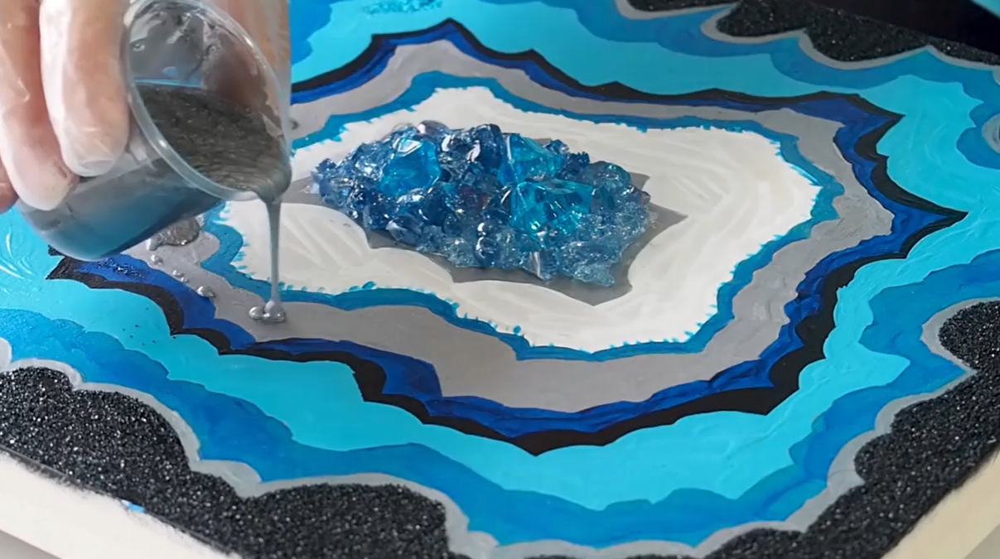

What is Geode?
In real, geode means rock that contains sparkling colored crystal inside in it but in resin art, you can create your own geode. You can create your geode piece with an MDF base, Acrylic base, wood, or glass. A resin geode is not a real geode. It is an imaginative version of geode which is made by resin, a chemical compound that dries with a shiny and hard finish. You can add color, shine, glitters, crystals, tiny chips, etc.
How to make a resin Geode?
If you never worked with resin then take a tutorial on working with this medium. There are some precautions for resin. Firstly, there is good ventilation in the room where you are going to work. Always put on your gloves.
The things which you needed to make this geode are listing below:
- Resin Part A and B
- Latex gloves, safety glasses, drop cloths
- Sticks for stir the resin mixture
- Measuring cup or weighting machine
- Tape for masking
- Isopropyl alcohol and tissue
- Wooden or MDF base
- Colors, decorative items like glitters and all
I made one geode wall piece some days ago. I didn’t have all the processing images of how to make with step by step but I have the final product image which I’ll be putting in last.
Firstly, I set up everything before mixing up a resin mixture like wearing gloves and covering the base sides by masking the tap. you can see a tutorial for that.
I had a resin with a 2:1 ratio in which I was mixed as 2 part resin to 1 part hardner. Stir this mixture for 4 to 5 minutes.After the activated mixture, I divided this mixture into 3 to 4 parts, not equal parts. you can divide this mixture as your choice. After dividing you can add colors or decorating items as your wish. After that, pouring the resin mixture with different colors whatever you want to make like add some stones in the corner with resin mixture and add glitter on-center like whatever. This is how you can do.
Adding a glitters layer like this. Adding crystal is easy like place the crystal on base and then pouring a good amount of plain resin mixture into it.I have made my wall piece and some clocks by following this method. Here are some photos.
I hope you liked this information.I also like to know about such new things and now i am trying to make some costaers and key-chains using resin.